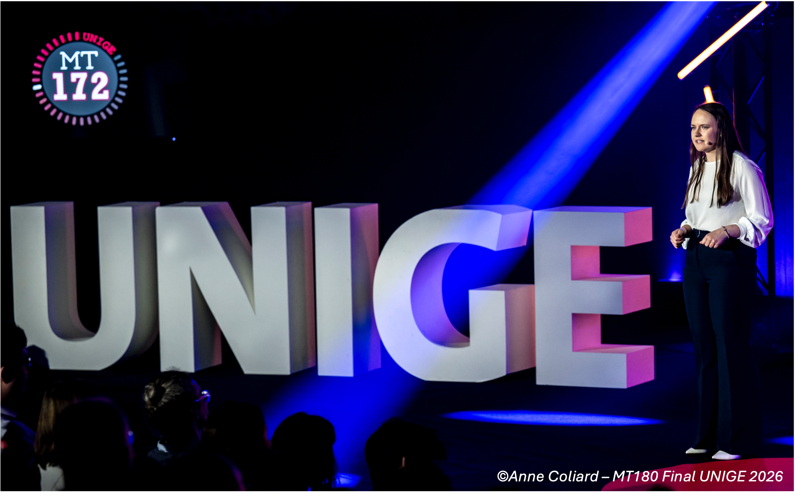

01
Climate multistability
How multiple equilibrium climate states emerge, coexist and disappear, and what their stability tells us about the structure of the climate system.
I am currently a PhD researcher at the University of Geneva in physics studying how the Earth system can occupy multiple climate states — and how feedbacks, stability and nonlinear dynamics shape transitions between them.

My research combines nonlinear dynamics, climate modelling and paleoclimate perspectives to understand why the same external forcing can produce very different climate responses depending on the background state of the Earth system.
How multiple equilibrium climate states emerge, coexist and disappear, and what their stability tells us about the structure of the climate system.
Characterising transitions, basin boundaries and early-warning signals for abrupt changes in components of the Earth system.
Investigating climate sensitivity as an emergent property of the Earth-system background state and its dynamical stability.
I am the lead developer of BIG-MITgcm v1.0, a coupled ocean–atmosphere–ice-sheet–vegetation–hydrology framework designed to investigate equilibrium climate states and long-timescale Earth-system feedbacks.
The model provides an intermediate-complexity approach between comprehensive Earth-system models and reduced-complexity models, allowing systematic exploration of climate-state structure across very different boundary conditions.
Read the GMD paperResearch spanning climate networks, Earth-system modelling, ecological climate metrics and tipping detection.
I enjoy teaching across physics, climate science and mathematics, with an emphasis on making complex concepts intuitive and engaging.
Nonlinear climate dynamics, climate multistability, tipping behaviour, climate sensitivity and coupled Earth-system modelling.
MSc thesis on climate change velocity computation applied to ecology.
Foundations in physics, mathematics and computational methods.
Science communication, conference activities, peer review and engagement with the wider climate-science community.
CHF 30,000 · Support for academic independence.
€1,400 · Global tipping points research.
€2,300 · Biogeodynamical paleoclimate modelling.
CHF 1,000 · Swiss Global Change Day.
I am always happy to discuss research, collaborations, teaching, nonlinear climate dynamics and Earth-system science.